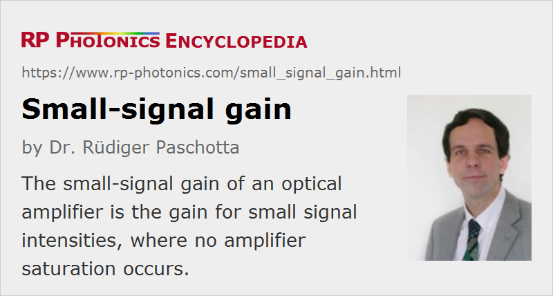

Small-signal Gain
Definition: optical gain for small signal intensities, where no amplifier saturation occurs
More general term: gain
German: Kleinsignalverstärkung
Categories: optical amplifiers, physical foundations
Formula symbol: gss
Units: %, dB
How to cite the article; suggest additional literature
Author: Dr. Rüdiger Paschotta
The small-signal gain of a gain medium (e.g. a laser medium in a laser or amplifier) is the gain obtained for an input signal which is so weak that it does not cause any gain saturation. In continuous-wave operation, this means that everywhere in the gain medium the signal intensity is well below the saturation intensity.
In a four-level laser gain medium with negligible ASE and no parasitic lasing, the small-signal gain in the steady state, as measured in decibels, is usually proportional to the absorbed pump power and to the stored energy. The threshold of a laser or an optical parametric oscillator is reached when the small-signal gain equals the total resonator losses. In a Q-switched laser, a high small-signal gain helps to achieve a short pulse duration. In a high-gain amplifier (e.g. a fiber amplifier), the small-signal gain achievable is often limited by amplified spontaneous emission (ASE) or by parasitic lasing.
For measuring the small-signal gain of a fiber amplifier (based on a rare-earth-doped fiber), for example, one needs to inject a test signal at the relevant wavelength, which is weak enough not to significantly modify the amplifier gain. Then one needs to measure both the launched signal power and the resulting amplified signal power.
Such measurements would be substantially more difficult e.g. in a bulk laser, where the injected input signal would be influenced by the resonator mirrors. In such cases, one may take an indirect approach – for example, calculate the required small-signal gain for reaching the laser threshold (based on known reflectivities of the resonator mirrors) and measuring at what pump power that is achieved. The gain at other pump power levels may then be estimated – in simple cases based on the assumption that it is linearly dependent on the pump power.
Questions and Comments from Users
Here you can submit questions and comments. As far as they get accepted by the author, they will appear above this paragraph together with the author’s answer. The author will decide on acceptance based on certain criteria. Essentially, the issue must be of sufficiently broad interest.
Please do not enter personal data here; we would otherwise delete it soon. (See also our privacy declaration.) If you wish to receive personal feedback or consultancy from the author, please contact him e.g. via e-mail.
By submitting the information, you give your consent to the potential publication of your inputs on our website according to our rules. (If you later retract your consent, we will delete those inputs.) As your inputs are first reviewed by the author, they may be published with some delay.
See also: gain, laser threshold, threshold pump power
and other articles in the categories optical amplifiers, physical foundations
|  |
If you like this page, please share the link with your friends and colleagues, e.g. via social media:
These sharing buttons are implemented in a privacy-friendly way!